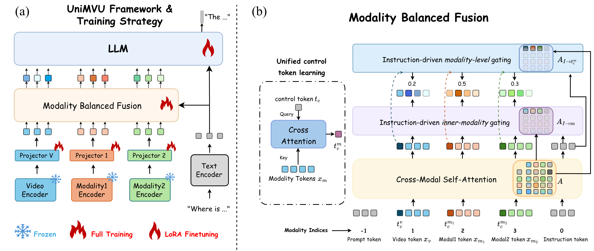
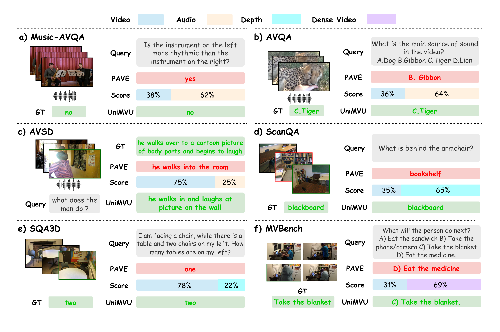
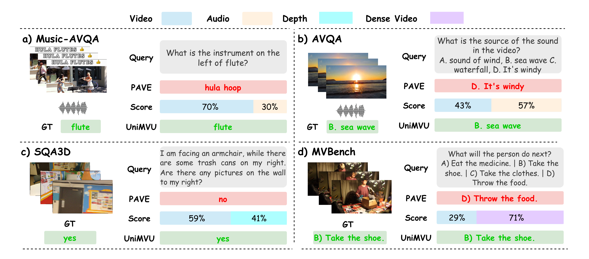

01
Modality encoders and projectors
Video, audio, and depth streams are aligned into a shared token space for unified multimodal reasoning.
Instruction-Aware Gating for Multimodal Videos
1 Mohamed bin Zayed University of Artificial Intelligence · 2 Tianjin University · 3 Chongqing University · 4 Linköping University


The instruction is used to guide both within-modality feature selection and cross-modality balancing before the final VideoLLM reasoning stage.
Video, audio, and depth streams are aligned into a shared token space for unified multimodal reasoning.
Salient evidence is emphasized within each modality so irrelevant local features do not dominate the answer.
Whole modalities are reweighted before fusion, allowing the model to trust the right evidence source for each question.

Evaluation across audio-video QA, 3D QA, and long-video QA. PAVE* denotes
our reproduction using the public PAVE code. UniMVU† refers to the
jointly trained multi-task model reported in the paper. For ScanQA and SQA3D, refined
scores are shown in parentheses where reported.
| Scale | Method | Audio Avg. | Visual Avg. | AV Avg. | Overall Avg. |
|---|---|---|---|---|---|
| 7B | CAT-FT | 84.9 | 86.1 | 83.2 | 84.3 |
| LLaVA-OV-FT (video-only) | 75.4 | 89.3 | 72.3 | 77.4 | |
| PAVE* | 79.1 | 92.7 | 77.8 | 81.9 | |
| UniMVU† | 78.9 | 92.8 | 77.2 | 81.6 | |
| UniMVU | 81.7 | 93.5 | 79.8 | 83.7 | |
| 0.5B | VAST | — | — | — | 80.7 |
| AVAF-Net | 78.1 | 82.3 | 72.1 | 75.9 | |
| AV-Master | 79.9 | 86.5 | 74.2 | 78.5 | |
| LLaVA-OV-FT (video-only) | 69.6 | 76.3 | 62.8 | 67.6 | |
| LLaVA-OV-FT* (video-audio concat) | 76.2 | 89.1 | 72.4 | 77.5 | |
| PAVE* | 75.9 | 88.6 | 72.4 | 77.3 | |
| UniMVU† | 77.2 | 90.2 | 74.8 | 79.3 | |
| UniMVU | 79.5 | 91.8 | 76.7 | 81.9 |
| Scale | Method | AVQA ACC (%) | AVSD ROUGE-L | AVSD CIDEr |
|---|---|---|---|---|
| 7B | LLaVA-OV-FT (video-only) | 90.8 | — | 124.9 |
| PAVE* | 93.4 | 38.5 | 151.6 | |
| UniMVU† | 92.2 | 39.5 | 162.7 | |
| UniMVU (AVQA / AVSD) | 94.3 | 39.8 | 165.1 | |
| 0.5B | PSTP-Net | 90.2 | — | — |
| AV-Master | 91.4 | — | — | |
| LLaVA-OV-FT (video-only) | 86.4 | — | 117.6 | |
| LLaVA-OV-FT* (video-audio concat) | 89.9 | 35.7 | 127.8 | |
| PAVE* | 89.6 | 36.5 | 134.9 | |
| UniMVU† | 91.1 | 37.8 | 145.9 | |
| UniMVU (AVQA / AVSD) | 92.3 | 38.2 | 147.1 |
| Scale | Method | EM@1 | BLEU-4 | METEOR | ROUGE-L | CIDEr |
|---|---|---|---|---|---|---|
| 7B | LLaVA-3D-7B | 27.0 (45.0) | 14.5 | 20.7 | 50.1 | 91.7 |
| Scene-LLM-7B | 27.2 | 12.0 | 16.6 | 40.0 | 80.0 | |
| LLaVA-OV-FT (video-only) | 27.4 (46.3) | — | 13.5 | 47.4 | 95.1 | |
| PAVE* | 28.9 (48.2) | 16.0 | 19.8 | 48.8 | 102.4 | |
| UniMVU† | 29.2 (48.8) | 17.83 | 20.1 | 49.01 | 104.2 | |
| UniMVU | 29.6 (48.8) | 16.0 | 19.8 | 49.0 | 102.7 | |
| 0.5B | SceSU | 25.1 | 13.2 | 14.9 | 35.5 | 69.6 |
| DSPNet | 26.5 | 15.4 | 15.7 | 39.3 | 78.1 | |
| LLaVA-OV-FT (video-only) | 20.5 (36.3) | 6.5 | 14.3 | 36.9 | 70.5 | |
| LLaVA-OV-FT (video-3d concat) | 10.2 (24.3) | 4.9 | 7.4 | 20.2 | 34.9 | |
| PAVE* | 23.5 (40.4) | 12.7 | 17.1 | 42.7 | 84.9 | |
| UniMVU† | 24.7 (42.0) | 14.5 | 17.9 | 44.2 | 89.7 | |
| UniMVU | 25.9 (43.2) | 13.5 | 18.0 | 44.7 | 90.9 |
| Scale | Method | EM@1 | What | Is | How |
|---|---|---|---|---|---|
| 7B | LLaVA-3D-7B | 55.6 (57.6) | — | — | — |
| Scene-LLM-7B | 54.2 | — | — | — | |
| LLaVA-OV-FT (video-only) | 55.8 (58.1) | — | — | — | |
| PAVE* | 57.6 (59.9) | 52.3 (56.9) | 69.2 (69.9) | 56.3 (57.4) | |
| UniMVU† | 58.1 (60.4) | 52.3 (56.6) | 70.7 (71.8) | 60.4 (61.1) | |
| UniMVU | 59.4 (61.6) | 53.4 (57.7) | 75.9 (76.8) | 55.9 (56.1) | |
| 0.5B | SceSU | 46.8 | 32.2 | 64.9 | 46.2 |
| DSPNet | 50.4 | 38.2 | 66.0 | 51.2 | |
| LLaVA-OV-FT (video-only) | 44.1 (45.7) | — | — | — | |
| PAVE* | 48.5 (50.6) | 37.5 (41.6) | 61.0 (62.1) | 50.1 (50.3) | |
| UniMVU† | 50.8 (52.6) | 40.9 (44.4) | 63.7 (64.7) | 52.5 (52.7) | |
| UniMVU | 55.2 (57.1) | 46.5 (50.6) | 67.6 (68.4) | 57.4 (57.6) |
| Scale | Method | SC | FGP | OS | AP | AS | Avg. |
|---|---|---|---|---|---|---|---|
| 0.5B | LLaVA-OV | 37.5 | 49.0 | 33.0 | — | — | 45.5 |
| PAVE* | 41.0 | 50.0 | 32.0 | 43.0 | 46.5 | 44.5 | |
| UniMVU† | 37.5 | 49.0 | 30.5 | 64.0 | 63.0 | 48.6 | |
| UniMVU | 43.0 | 50.5 | 30.0 | 53.5 | 52.0 | 46.7 | |
| 7B | VideoChat2-7B | 44.0 | 49.0 | 42.5 | 47.5 | 66.0 | 51.1 |
| VideoLLaMA2.1-7B | — | — | — | — | — | 57.3 | |
| PAVE-7B* | 51.0 | 53.5 | 39.5 | 70.5 | 70.7 | 57.1 | |
| LLaVA-OV-7B (Baseline) | 52.0 | 53.0 | 35.5 | — | — | 56.7 | |
| UniMVU† | 51.5 | 58.0 | 39.5 | 76.5 | 76.1 | 59.5 | |
| UniMVU | 51.0 | 54.5 | 38.5 | 71.0 | 77.0 | 58.0 |
The qualitative examples show that UniMVU shifts attention toward the modality that actually resolves the question, rather than relying on a fixed multimodal weighting.


If you find UniMVU useful in your research, please cite the paper below.
We gratefully acknowledge the open-source projects that UniMVU builds upon: PAVE, Qwen2, LLaVA-OneVision, and LMMS-Eval.